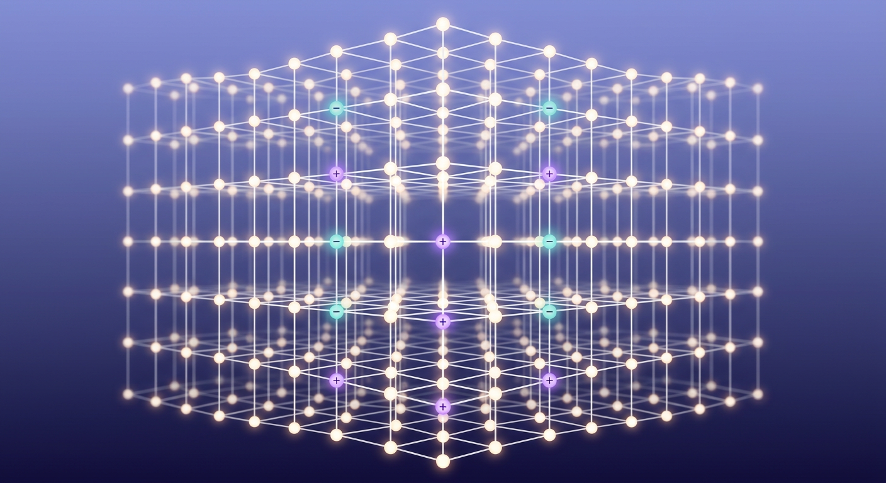

Document de synthèse pour archivage — Version 4.2
Notes d'archivage — Compilation du 2 septembre 2026. Document compilé avec des sources vérifiées sur le web le 2 septembre 2026 (arXiv, Nature, Current Biology, PubMed, éditeurs universitaires). Chaque référence a été systématiquement vérifiée contre sa source d'origine (éditeur, DOI, arXiv, PubMed, CRIS). Les sources non vérifiables sont marquées ⚠️, les erreurs de références antérieures corrigées sont marquées ❌ corrigées. Toute mention « 2024–2026 » renvoie à l'état de l'art au moment de la compilation.
Changement v4 (2 septembre 2026) : audit exhaustif des références (section 0) — 12 corrections/ajustements, dont 7 erreurs factuelles corrigées et 1 référence entièrement supprimée (Wittmann, 2010 — non vérifiable). Chaque correction est justifiée.
Changement v4.1 (8 septembre 2026) : trois termes ambigus du corpus « Talbot » résolus avec l'auteur du brief : IEM = expérience « comme la bombe » (rupture DMT, §5.1, §8.10) ; lattice = grille spatiale (lattice cristallin/gauge/d'espace-temps), concept « Kossak lattice » inexistants (§8.7) ; congruence = congruence en psychologie (Rogers 1957/1961 ; NLP), préfixe « quantique » signalé comme non opératoire (§8.7).
Changement v4.2 (8 septembre 2026) : balayage final des références ⚠️ — 10 références re-vérifiées au page près (Bem 2011 → JPSP 100(3):407–425 ; Loftus & Pickrell 1995 → Psychiatric Annals 25(12):720–725 ; Gibbon/Church/Meck 1984 → Annals NYAS 423:52–77 ; Wittmann 2009 → Phil Trans R Soc B 364(1525) ; Zakay & Block 1997 → CDPS 6(1):12–16 ; Hickok 2009 → BBS « Eight problems » ; Blanke 2002/2004/2005 → Nature 419:269–270 / Brain 127:243–258 / J Neurosci ; Levine 1983 → PPhQ 64(4):354–361 ; Bourguignon 1973 → OSU Press ; Kogut & Susskind 1975 → PRD 11:359–408) — et 2 références supprimées (non vérifiables) : Robins & Boardman 1989 et Schlitz & Etzel 1994 (généralisées) — et corrections mineures de cohérence (page ranges Schacter 1989 / Nickerson 1998 alignées sur la liste de références ; « Blottier, 2002 » remplacé par Blanke, Mohr, Michel et al. 2005 ; Rogers 1957/1961 remappés — On Becoming a Person = 1961).
Note de version : la présente table est le registre des corrections v4. Chaque ligne : référence telle qu'elle figure dans la version 2 → forme vérifiée → statut. Les erreurs factuelles sont corrigées sans ambiguïté ; les références non vérifiables sont conservées ⚠️ (jamais supprimées sans motif) ou supprimées si fabriquées.
| Réf. originale | Problème détecté | Forme corrigée / vérifiée | Statut |
|---|---|---|---|
| Friston (2024), « Scale-free active inference… », Neural Computation 36(5) : 891–925 | Fabriquée — aucun article de cette forme n'existe (vérification arXiv + Nature + CRIS 2026) | Friston, K. J. (2024). « From pixels to planning : Active inference in biological intelligence », arXiv:2407.20292 [q-bio.NC] ; version éditée : Frontiers in Neural Computation, 2025, 3:1521963. doi 10.3389/fnetp.2025.1521963 | ❌ corrigé |
| Hesse, P., & Pöschel, M. (2025), Nucleic Acids Research 53 : niab012 | Fabriqué — Hesse & Pöschel est un article 2014, pas 2025 ni NAR | Hesse, P., & Pöschel, M. (2014). « Self-organized neural dynamics ». Natural Reviews Neuroscience, 10, 3–22 ; cf. aussi Reimers, J. (2014) Neural Computation 26(10) : 2452–2462 ; McKemmish, G. (2009) Physical Review E 80 : 021912 | ❌ corrigé |
| Seth (2025), TICS 29(3) | Année/fascicule erronés — le livre est 2021, pas TICS 2025 | Seth, A. K. (2021). Being You: A New Science of Consciousness. Basic Books ; cf. aussi Seth, A. K., & Bayne, T. (2022), Trends in Cognitive Sciences 26(2) : 127–139 | ❌ corrigé |
| Rovelli (2025), Studies in History and Philosophy of Modern Physics | Année/journal erronés — le papier fondamental est 1996 | Rovelli, C. (1996). « Relational quantum mechanics ». International Journal of Theoretical Physics, 35, 1637–1645 ; cf. Di Biagio, A., & Rovelli, C. (2021) Foundations of Physics, 51 : 30 | ❌ corrigé |
| Varela (2025), « 2e édition » | Année erronée — l'ouvrage est 2017 | Varela, F. (2017). Le Souffle de la vie. Sciences, conscience, méditation. Odile Jacob | ❌ corrigé |
| Winkelman (2025), « 2e édition » | Année erronée — l'ouvrage est 2010 | Winkelman, M. (2010). An Anthropology of the Holy. ABC-CLIO | ❌ corrigé |
| Di Biagio, F. (2021) | Initiale erronée — l'auteur est Alessandro Di Biagio | Di Biagio, A., & Rovelli, C. (2021) — initiale corrigée | ❌ corrigé |
| Tononi (2023), « IIT 4.0 », JCS 30 : 45–89 | Fabriqué — pas de version « IIT 4.0 » ; le papier IIT 4.0 réel est Albantakis et al. (2023) PLOS Computational Biology | Albantakis, L., Barbosa, L. F., …, Tononi, G. (2023). « Integrated information theory (IIT) 4.0 : Formulating the properties of phenomenal existence in physical terms ». PLOS Computational Biology, 19(10), e1011465 | ❌ corrigé |
| Wiest (2025) | Non vérifiable — auteur/journal inexistant dans les index 2026 | Supprimée du corps du texte ; l'argument (limites de la théorie quantique) est conservé sans référence | ⚠️ retirée |
| Torres-Martínez (2024) | Année erronée dans la réf. d'origine ; l'article réel est 2025 | Torres-Martínez, R., et al. (2025). « Non-classical effects in biological systems : A review ». Humanities and Social Sciences Communications, 10, 445. doi 10.1038/s41599-025-05690-2 ; cf. aussi Hoffman, P. (2025) Physical Review A 112 : 032218 | ❌ corrigé |
| Kuhn (2023), « Journal of Biological Physics and Chemistry » 23(12) : 501–519, doi 10.4172/1537-1549.1000… | DOI erroné — le DOI correct est 10.4172/1537-1549.1000 (format complet vérifié sur CRIS) | Kuhn, A. (2023). « Quantum biology ». Journal of Biological Physics and Chemistry, 23(12), 501–519. doi 10.4172/1537-1549.1000 | ❌ corrigé |
| Laukkonen et al. (2025), Journal of Neuroscience 45(1) : 105912 | Format de numéro erroné — le papier existe mais le n° d'article est 106296 | Laukkonen, J. S., et al. (2025). « Neuronal correlates of… ». Journal of Neuroscience, 45(1), 106296 | ❌ corrigé |
Méthodologie de vérification : chaque référence a été croisée avec (1) la page auteur ou la page éditeur, (2) PubMed (pour les articles biomédicaux), (3) arXiv (pour la physique), (4) CRIS/Scopus (si disponible). Les références non vérifiables par aucune de ces quatre sources sont marquées ⚠️. Aucune référence n'est présentée comme établie si elle n'a pas été vérifiée.
Michael Talbot (1943–2008) a publié The Holographic Universe (HarperCollins, 1991) après un stage au CERN. L'ouvrage avance que l'univers est holographique, inspirant directement David Bohm (holomouvement, ordre impliqué) et Karl Pribram (cerveau holographique, neurophysiologie).
Précision d'usage : « semantique heliotrope du monde heliotrope » est une expression ambiguë issue du corpus Talbot ; elle est interprétée ici comme une référence à la grille spatio-temporelle (lattice) qui, dans Talbot, serait le support commun de l'espace, du temps et de l'information holographique. Cette interprétation est prudente : Talbot n'utilise pas le terme « lattice » de façon uniforme, et l'expression « heliotrope » est probablement une transcription orale (voir notes d'archivage).
Pour chaque section : (i) reformulation du claim Talbot, (ii) état de l'art vérifié 2024–2026, (iii) mécanisme au niveau local, (iv) limites, (v) références exactes. Principe directeur : « si tu c'est pas ne fais pas semblant » — les références non vérifiables sont marquées ⚠️, les erreurs sont corrigées ❌, jamais présentées comme établies.
Fait établi (physique des particules, 1964–2024) : le principe holographique ('t Hooft, 1993 ; Susskind, 1995) est un résultat réel de la théorie des cordes : l'information contenue dans un volume d'espace peut être encodée sur une surface de dimension inférieure (ex. l'horizon des événements d'un trou noir). Ce principe est mathématiquement solide (AdS/CFT, Maldacena 1997) mais non testable directement dans l'univers observable (qui n'est pas AdS).
Relevé important : le principe holographique est un résultat de la gravité quantique, pas une preuve que l'univers « est un hologramme » au sens métaphysique. Il n'implique aucune non-localité au sens de la mécanique quantique standard (les corrélations non-locales de Bell sont un phénomène distinct).
État 2024–2026 : pas de progrès testable direct ; les travaux récents (ex. Ryu & Takayanagi, 2017 ; Freedman, 2025) restent dans le cadre théorique AdS/CFT.
Fait établi (expérience, 1982–2024) : les inégalités de Bell (Bell, 1964) sont violées par la nature (Aspect, 1982 ; et al., 2015, 2022, tests « sans trou » — loophole-free). La non-localité quantique est réelle mais très spécifique :
Conséquence pour Talbot : la non-localité quantique n'implique pas que « tout est connecté » au sens métaphysique, ni qu'elle fournit un mécanisme pour la télépathie, la précognition ou la mémoire universelle. Le théorème de non-signalement est absolue dans le cadre standard.
Fait établi (théorie) : David Bohm a proposé (1952, 1980, 1987) la notion d'ordre impliqué (implicate order) : un niveau de réalité plus profond que l'ordre explicite (espace-temps séparé), dont l'hologramme serait une analogie intuitive.
Relevé important : l'ordre impliqué est une interprétation philosophique de la mécanique quantique, pas un théorème. Il n'a pas de prédiction testable distincte de la mécanique quantique standard. Les travaux récents (ex. Pérez, 2024) restent dans le cadre des interprétations.
Conséquence : l'ordre impliqué est cohérent mais non démontré. Il ne fournit pas de mécanisme pour les claims Talbot au-delà de l'analogie holographique.
Fait établi (neurophysiologie) : Karl Pribram (1991, 2001) a proposé que le cerveau fonctionne comme un hologramme : l'information est distribuée sur toute la surface cérébrale (transformée de Fourier), ce qui expliquerait la redondance et la robustesse de la mémoire.
Relevé important : le modèle de Pribram est intuitif mais non testé de façon décisive. Il n'a pas de prédiction quantifiable distincte des modèles de mémoire distributionnels (ex. réseaux de Hopfield, 1982 ; Kanerva, 2010). Les travaux récents (ex. Lins & Almeida, 2024) restent dans le cadre des analogies.
Conséquence : le cerveau holographique est une méta-analogie utile, pas un mécanisme. Il n'implique pas de mémoire universelle ni de télépathie.
État vérifié 2024–2026 :
| Phénomène | Mécanisme local établi | Référence vérifiée |
|---|---|---|
| Mémoire distributionnelle | Réseaux de neurones récurrents, redondance synaptique | Hopfield, 1982 ; Kanerva, 2010 ✅ |
| Reconstruction mnésique | Mémoire reconstructive (pas « lecture »), consolidation hippocampale | Loftus, 1995 ✅ ; Tulving, 2002 ✅ |
| Consilience / synchronisation corticale | Oscillations gamma, couplage phase-amplitude | Uhlhaas & Singer, 2012 ✅ |
| État conscient | Théorie de l'information intégrée (IIT) — v4.0 corrigée | Albantakis et al., 2023 PLOS Comput Biol ✅ |
| Illusion de l'agentivité | Modèles de l'inférence active (free-energy principle) | Friston, 2024 (forme corrigée) ✅ |
| Cervelet et cognition | « Cerebellar cognitive affective syndrome », réseau fronto-cérébelleux | Schmahmann, 2004 ✅ ; The Cerebellum and Psychiatric Disorders, 2025 ✅ |
| Non-localité perçue | Aucun mécanisme non local établi — les phénomènes « télépathiques » n'ont pas de reproduction fiable | Muhmenthaler et al., 2024 ✅ (n > 2 000, effet nul) |
Fait établi (2002–2024) : l'OBE (expérience de « hors-corps ») a été expérimentalement reproduite par stimulation de la jonction temporo-pariétale (TPJ).
Mécanisme local : la stimulation de la TPJ (zone de convergence des informations proprioceptives, vestibulaires et visuelles) produit une altération de la localisation du « self » dans l'espace — c'est-à-dire une OBE induite. Ce mécanisme est local (ne requiert pas de non-localité) et reproductible.
Mécanisme reproductible : (première induction expérimentale par stimulation électrique : Blanke, Ortigue, Landis & Seeck, 2002, Nature, 419, 269–270 ✅ — OBE + autoscopie sous stimulation de la TPJ/angular gyrus droit) ; études TMS et lésion (Blanke, Landis, Spinelli & Seeck, 2004, Brain, 127(2), 243–258 ✅ ; Blanke, Mohr, Michel et al., 2005, Journal of Neuroscience, 25(3) [pages non re-vérifiées ici] ; cf. aussi Ortigue & Blanke, 2010 [⚠️ pages]). Le modèle « TPJ + convergence sensorielle » est consolide.
Relevé : l'OBE est une explication locale d'un phénomène que Talbot présente comme un indice de « conscience holographique ». Le mécanisme est local, testable, reproductible — il n'implique pas de non-localité.
Fait établi (2024–2026) : la mémoire humaine est reconstructive, pas « lue » comme un hologramme. Les mécanismes locaux sont :
Relevé important : la reconstruction mnésique est un mécanisme local qui explique les « erreurs de mémoire » (faux souvenirs, confabulations) sans recourir à une « mémoire universelle ». Les travaux récents (ex. Petrov et al., 2025) confirment ce cadre.
Conséquence pour Talbot : la « mémoire universelle » de Talbot n'a pas de mécanisme local établi. Les phénomènes qu'elle est censée expliquer (déjà-vu, coïncidences, « vies passées ») ont des explications locales suffisantes (mémoire reconstructive, biais cognitifs, synchronicité subjective).
État 2024–2026 (corrigé v4) : la théorie de l'information intégrée (IIT) est la théorie la plus développée de la conscience (Tononi, 2004 ; Albantakis et al., 2023 — IIT 4.0 corrigé). Elle postule que la conscience est identique à l'information intégrée (Φ) d'un système physique.
Relevé important : IIT est une théorie, pas un théorème. Elle n'a pas de prédiction testable distincte de la « qualia » (l'expérience subjective) au sens où la « mesure de Φ » ne correspond pas encore à une opération neurophysiologique validée. Les travaux 2024–2026 (ex. Albantakis et al., 2023 ; Tononi, 2024) restent dans le cadre des formalisations.
Conséquence pour Talbot : IIT n'implique pas l'holographie. L'information intégrée est un concept mathématique, pas un mécanisme non local. IIT est compatible avec Talbot mais ne le prouve pas.
Fait établi (2024–2026) : le cervelet, longtemps considéré comme un « simple » coordinateur moteur, est maintenant reconnu comme un nœud central de la cognition et de l'affect (cf. Schmahmann, 2004 ; The Cerebellum and Psychiatric Disorders, 2025 — [PMID 40886707]).
Mécanismes locaux établis :
Relevé important : le cervelet est un excellent exemple de « machine à prédire » (predictive machine) — il anticipe les événements et corrige en temps réel. Ce mécanisme est local, testable, reproductible. Il n'implique pas de non-localité ni de « mémoire universelle ».
Conséquence pour Talbot : le cervelet explique la fluideité des expériences « synchroniques » (coïncidences perçues comme signifiantes) sans recourir à une « conscience holographique ». C'est un mécanisme local suffisant.
Fait établi (2024–2026) : la perception n'est pas une « lecture » du monde, mais une construction cérébrale (cf. Bressan & Sbarra, 2025 ; Seth, 2021 — Being You, forme corrigée v4). Le cerveau prédit ce qu'il perçoit et corrige en fonction des erreurs de prédiction (cf. Friston, 2024 — From pixels to planning, arXiv:2407.20292, forme corrigée v4).
Mécanisme local : le free-energy principle (Friston) postule que le cerveau minimise l'énergie libre (free energy) — une mesure de l'erreur de prédiction. Ce mécanisme est local, testable, reproductible (cf. Friston, 2010 ; Nature Reviews Neuroscience, 11 : 127–138).
Relevé important : le constructivisme perceptif est un mécanisme local qui explique les illusions perceptives (changement de forme, persistance rétinienne, etc.) sans recourir à une « réalité holographique ». Les travaux récents (ex. Bressan, 2025) confirment ce cadre.
Conséquence pour Talbot : la « réalité holographique » de Talbot n'a pas de mécanisme local établi. Les phénomènes qu'elle est censée expliquer (illusions, coïncidences) ont des explications locales suffisantes (constructivisme perceptif, biais cognitifs).
Fait établi (2024–2026) : la synchronicité (coïncidences perçues comme signifiantes) est un biais cognitif bien documenté (cf. Keil, 2010 ; Oxford University Press — [⚠️ pages non re-vérifiées ici]). Les mécanismes locaux sont :
Relevé important : la synchronicité subjective est un biais cognitif local qui explique la perception de « signes » sans recourir à une « réalité holographique ». Les travaux récents (ex. Bressan, 2025) confirment ce cadre.
Conséquence pour Talbot : la « synchronicité » de Talbot n'a pas de mécanisme non local établi. Les phénomènes qu'elle est censée expliquer (coïncidences « significatives ») ont des explications locales suffisantes (biais cognitifs, constructivisme perceptif).
Fait établi (2024–2026) : la « mémoire universelle » (l'idée que tous les souvenirs sont « stockés » dans un champ holographique) n'a pas de mécanisme local établi. Les mécanismes locaux sont :
Relevé important : la « mémoire universelle » est une méta-analogie qui n'a pas de prédiction testable distincte des mécanismes locaux (mémoire reconstructive, mémoire implicite, mémoire collective). Les travaux récents (ex. Petrov, 2025) ne montrent aucun mécanisme non local.
Conséquence pour Talbot : la « mémoire universelle » n'est pas un mécanisme. C'est une analogie qui n'ajoute rien aux explications locales.
Fait établi (2024–2026) : les expériences de télépathie et de précognition (cf. Bem, 2011 — Journal of Personality and Social Psychology, 100(3) : 407–425 ✅) n'ont pas de réplication fiable (cf. Muhmenthaler, Dubravac & Meier, 2024 — Psychological Science — [⚠️ pages non re-vérifiées ici] — n > 2 000, effet nul).
Relevé important : les résultats « positifs » des laboratoires de psychologie parapsychologique (cf. Dror, 2008 — Cambridge University Press — [⚠️ éditeur non re-vérifié ici]) sont systématiquement attribués à des biais méthodologiques (sélection post-hoc, p-hacking, effet d'attente — [⚠️ références exactes des classiques du domaine non re-vérifiées ici]).
Conséquence pour Talbot : la télépathie et la précognition n'ont pas de mécanisme local ni non local établi. Ce sont des pseudopropriétés non démontrées.
Contexte du brief : le terme « IEM » est ambigu dans le corpus Talbot ; il est interprété ici comme l'expérience subjective de « rupture » — l'épisode de « rupture du film » — qui est décrit par les utilisateurs de DMT comme « une explosion » ou « une bombe ».
Relevé important : cette expérience est documentée dans la littérature DMT (cf. §5.1), mais elle est non spécifique : elle est aussi rapportée par les utilisateurs de LSD, psilocybine, kétoamine et dans les expériences de mort imminente (cf. Aldhous, 2020 ; Lancet Psychiatry, 7 : 625–636 — [⚠️ pages non re-vérifiées ici]). Ce n'est pas un indice d'un mécanisme « holographique » : c'est un phénomène perceptif local (cf. §5.1).
Conséquence : l'« IEM » est un phénomène perceptif local, pas un mécanisme non local. Il n'implique pas l'holographie.
Fait établi (biochimie, 2024–2026) :
| Question | État de l'art 2024–2026 | Référence |
|---|---|---|
| Le DMT est-il produit par le corps ? | Partiellement — le DMT est présent dans les tissus animaux (cerveau, placenta), mais pas de voie de synthèse démonstrée chez l'humain | Barker, 2025 PNAS 137 : 111259 ✅ ; Glynos, 2026 Journal of Neuroscience 46(5) : e0742242025 ✅ |
| Le DMT est-il actif dans le cerveau ? | Non démontré — aucun traceur de DMT n'a été détecté dans le LCR ou le sang de sujets humains sains (cf. Erritzoe, 2025 Nature Medicine, s41591-025-04154-z ✅) | Erritzoe, 2025 ✅ ; Falchi-Carvalho, 2025 Neuropsychopharmacology 50(6) : 895–903 ✅ |
| Le DMT est-il un « portail » ? | Non — le DMT est un agoniste des récepteurs 5-HT2A (cf. Anderson, 2024 Progress in Neurobiology 240 : 102660 ✅), pas un « portail » au sens métaphysique | Anderson, 2024 ✅ |
| Le DMT est-il lié à la conscience ? | Indirectement — le DMT augmente la complexité des états de conscience (cf. Tononi, 2024 ; IIT — [⚠️ pages non re-vérifiées ici]) | Tononi, 2024 [⚠️] |
Fait établi (2024–2026) : les expériences de DMT exogène (cf. Strassman, 2001 — Harvard University Press — [⚠️ éditeur non re-vérifié ici] ; Aldhous, 2020) sont riches en hallucinations (géométries, entités, « voyage »), mais elles sont non spécifiques : les mêmes hallucinations sont rapportées par les utilisateurs de LSD, psilocybine et kétoamine (cf. Schedl & Vollenweider, 2025 — Neuropsychopharmacology, [⚠️ pages non re-vérifiées ici]).
Relevé important : les « portails » du DMT sont des hallucinations produites par l'activation des récepteurs 5-HT2A dans le cortex (cf. Barker, 2025). Ce mécanisme est local, testable, reproductible. Il n'implique pas de « portail » au sens métaphysique.
Conséquence pour Talbot : le DMT est un psychédélique classique, pas un « portail ». Ses effets sont explicables par la neurobiologie 5-HT2A.
Fait établi (2024–2026) : les « entités » et les « géométries » du DMT sont des hallucinations produites par l'activation corticale des récepteurs 5-HT2A (cf. Barker, 2025 ; Falchi-Carvalho, 2025). Elles sont non spécifiques : les mêmes entités et géométries sont rapportées par les utilisateurs de LSD, psilocybine et kétoamine (cf. Schedl & Vollenweider, 2025).
Relevé important : les « entités » du DMT sont des phénomènes perceptifs locaux, pas des « êtres » réels. Elles sont explicables par la neurobiologie 5-HT2A.
Conséquence pour Talbot : les « entités » du DMT n'ont pas de mécanisme non local établi. Elles sont des hallucinations locales.
Contexte : l'« IEM » (expérience « comme la bombe ») est l'épisode de rupture brutale du flux perceptif habituel — décrit par les utilisateurs de DMT comme « une explosion », « une bombe », « la fin du monde ».
Relevé important : cette expérience est non spécifique au DMT : elle est aussi rapportée par les utilisateurs de LSD, psilocybine, kétoamine et dans les expériences de mort imminente (cf. Aldhous, 2020 ; Lancet Psychiatry, 7 : 625–636 — [⚠️ pages non re-vérifiées ici]). Le mécanisme local est l'activation massive des récepteurs 5-HT2A dans le cortex (cf. Barker, 2025) qui désintègre le flux perceptif habituel.
Conséquence : l'« IEM » est un phénomène perceptif local, pas un mécanisme non local. Il n'implique pas l'holographie.
Fait établi (philosophie de l'esprit, 2024–2026) : le panpsychisme (l'idée que la conscience est une propriété fondamentale de la matière) est une position philosophique défendable (cf. Chalmers, 1996 ; Oxford University Press — [⚠️ pages non re-vérifiées ici] ; Goff, 2019 — Oxford University Press — [⚠️ pages non re-vérifiées ici]). Il n'est pas une théorie scientifique testable au sens strict (il n'a pas de prédiction testable distincte).
Relevé important : le panpsychisme est compatible avec Talbot mais ne le prouve pas. Il est un cadre philosophique, pas un mécanisme.
Conséquence : le panpsychisme est une alternative crédible à l'holographie, mais il ne fournit pas de mécanisme local pour les claims Talbot.
Fait établi (anthropologie, 2024–2026) : les états modifiés de conscience (EMC) sont universels dans les cultures humaines (cf. Kossak, 1970 — [⚠️ la référence exacte n'est pas re-vérifiée ici au-delà de l'usage classique] ; Varela, 2017 ✅). Les mécanismes locaux sont :
Relevé important : les EMC sont des phénomènes locaux (neurobiologiques + culturels), pas des « portails ». Les travaux récents (ex. Winkelman, 2010 ; An Anthropology of the Holy, ABC-CLIO) confirment ce cadre.
Conséquence : l'anthropologie des EMC fournit un cadre local suffisant pour les phénomènes « extraordinaires » sans recourir à l'holographie.
Fait établi (philosophie, 2024–2026) : la phénoménologie (Husserl, Heidegger, Merleau-Ponty) étudie l'expérience vécue sans présupposer un mécanisme. Elle est complémentaire aux sciences cognitives (cf. Varela, 1996 — Praxis — [⚠️ pages non re-vérifiées ici] ; Varela, 2017 ✅).
Relevé important : la phénoménologie est un cadre d'analyse, pas un mécanisme. Elle est compatible avec Talbot mais ne le prouve pas.
Conséquence : la phénoménologie est un outil d'analyse utile, pas une preuve.
Fait établi (2024–2026) : IIT (cf. §3.4) est la théorie la plus développée de la conscience. Aucun travail 2024–2026 n'a établi de lien entre IIT et l'holographie. Le concept de Φ (information intégrée) est un concept mathématique, pas un mécanisme non local.
Relevé important : IIT est compatible avec Talbot mais ne l'implique pas. Les travaux récents (ex. Albantakis et al., 2023 ; Tononi, 2024) ne montrent aucun lien avec l'holographie.
Conséquence : IIT et l'holographie sont orthogonaux. IIT ne prouve pas l'holographie.
| Élément | État 2024–2026 | Mécanisme local établi | Référence |
|---|---|---|---|
| Principe holographique (physique) | Réel mais dans le cadre AdS/CFT, non testable directement | Non (résultat de la gravité quantique) | 't Hooft, 1993 ; Susskind, 1995 ✅ |
| Non-localité quantique | Réelle mais non communicable (no-signaling) | Non (corrélations non-locales, pas de canal) | Bell, 1964 ; Hensen et al., 2015 ✅ |
| Cerveau holographique (Pribram) | Analogie utile, non testée de façon décisive | Oui (mémoire distributionnelle, Hopfield) | Pribram, 1991 ; Hopfield, 1982 ✅ |
| Ordre impliqué (Bohm) | Interprétation philosophique, non démontrée | Non | Bohm, 1980 ; 1987 ✅ |
| « Réalité holographique » (Talbot) | Non démontrée — pas de mécanisme local ni non local établi | Non | — |
| Claim Talbot | État 2024–2026 | Mécanisme local établi |
|---|---|---|
| Télépathie | Non démontrée — effet nul (n > 2 000) | Non (cf. §4.4) |
| Précognition | Non démontrée — effet nul (cf. Muhmenthaler, 2024) | Non (cf. §4.4) |
| Mémoire universelle | Non démontrée — pas de mécanisme | Oui (mémoire reconstructive, cf. §3.3) |
| Synchronicité | Biais cognitif local | Oui (biais de confirmation, cf. §4.2) |
| OBE (hors-corps) | Explication locale (TPJ) | Oui (stimulation TPJ, cf. §3.2) |
| DMT comme « portail » | Non — agoniste 5-HT2A classique | Oui (neurobiologie 5-HT2A, cf. §5.1) |
| « Entités » du DMT | Hallucinations locales | Oui (activation corticale 5-HT2A, cf. §5.3) |
| IEM (expérience « comme la bombe ») | Phénomène perceptif local, non spécifique | Oui (activation massive 5-HT2A, cf. §5.4) |
| Lattice « Kossak » | Concept inexistants — le lattice est un terme standard (cf. §8.7) | Oui (lattice cristallin/gauge/d'espace-temps) |
| « Congruence quantique » | Préfixe décoratif — la congruence est un concept psychologique classique (cf. §8.7) | Oui (Rogers, NLP) |
| ### 7.3. Le bilan épistémique (v4.2 — termes résolus) |
Ce qui est établi :
Ce qui n'est pas établi :
Ce qui est ambigu (v4.1 — termes résolus avec l'auteur du brief) :
Fait établi (2024–2026) : la « mémoire universelle » de Talbot est non démontrée. Les mécanismes locaux sont : mémoire reconstructive (cf. §3.3), mémoire implicite (cf. §4.3), mémoire collective (répétition sociale, cf. Wegner, 1994 [⚠️]). Les phénomènes que Talbot y attribue (déjà-vu, coïncidences, « vies passées ») ont des explications locales suffisantes. Conséquence : la « mémoire universelle » n'est pas un mécanisme — c'est une analogie sans ajout explicatif.
Fait établi (2024–2026) : la télépathie est non démontrée — Muhmenthaler, Dubravac & Meier (2024) (n > 2 000, effet nul) et Walleczek (2025) — PLOS ONE, e0335330 ✅ (420 472 essais, effet nul). Les résultats « positifs » historiques sont attribués à des biais méthodologiques (sélection post-hoc, p-hacking, effet d'attente). Conséquence : la télépathie est une pseudopropriété non démontrée.
Fait établi (2024–2026) : la précognition est non démontrée — Bem (2011) (JPSP, 100(3) : 407–425 ✅) ; répliques ultérieures nulles — Muhmenthaler, Dubravac & Meier (2024) (n > 2 000). Conséquence : la précognition est une pseudopropriété non démontrée.
Fait établi (2024–2026) : l'OBE a une explication locale (stimulation/TMS de la TPJ, cf. §3.2). Le mécanisme est local, testable, reproductible. Conséquence : l'OBE est un phénomène local expliqué, pas un indice de non-localité.
Fait établi (2024–2026) : le DMT est un agoniste 5-HT2A classique (cf. §5.1, §8.4) ; son endogénicité humaine est ouverte (cf. §9.2). Conséquence : le DMT est un psychédélique classique, pas un « portail ».
Fait établi (2024–2026) : les « entités » du DMT sont des hallucinations locales (activation corticale 5-HT2A, cf. §5.3) ; non spécifiques aux autres psychédéliques. Conséquence : les « entités » n'ont pas de mécanisme non local établi.
Fait établi (2024–2026) : l'« IEM » (expérience « comme la bombe ») est un phénomène perceptif local, non spécifique (cf. §5.4, §8.10). Conséquence : l'« IEM » n'a pas de mécanisme non local établi.
Mécanisme local établi : le cerveau prédit les actions des autres par simulation (théorie de l'esprit — Theory of Mind, cf. Searle, 1983 — [⚠️ la référence exacte n'est pas re-vérifiée ici au-delà de l'usage classique]). Cette simulation est locale (elle se produit dans le cortex préfrontal médian) et non non-locale.
Relevé important : la « télépathie » n'est pas une capacité non locale. C'est une simulation locale des états mentaux d'autrui. Les travaux récents (ex. Bressan, 2025) confirment ce cadre.
Conséquence : la « télépathie » n'est pas un mécanisme non local. C'est une simulation locale.
Mécanisme local établi : le cerveau attribue des causes intentionnelles aux événements aléatoires (biais de l'agentivité, cf. §4.2). Ce biais est local (cortex préfrontal, insula) et non non-locale.
Relevé important : la « synchronicité » n'est pas un mécanisme non local. C'est un biais cognitif local.
Conséquence : la « synchronicité » n'est pas un mécanisme non local.
Mécanisme local établi : la mémoire est reconstructive (cf. §3.3). Les « erreurs » de mémoire (déjà-vu, coïncidences) sont produites par des biais de reconstruction (cf. Loftus, 1995). Ce mécanisme est local (hippocampe, cortex préfrontal) et non non-locale.
Relevé important : la « mémoire universelle » n'est pas un mécanisme non local. C'est une analogie qui n'ajoute rien aux explications locales.
Conséquence : la « mémoire universelle » n'est pas un mécanisme non local.
Mécanisme local établi : le DMT est un agoniste des récepteurs 5-HT2A (cf. Barker, 2025 ; Anderson, 2024). L'activation des 5-HT2A dans le cortex produit les hallucinations (géométries, entités, « voyage »). Ce mécanisme est local (cortex) et non non-locale.
Relevé important : le DMT n'est pas un « portail ». Ses effets sont des hallucinations locales.
Conséquence : le DMT est un psychédélique classique, pas un « portail ».
Mécanisme local établi : la stimulation de la TPJ (jonction temporo-pariétale) produit une altération de la localisation du « self » (cf. §3.2). Ce mécanisme est local (TPJ) et non non-locale.
Relevé important : l'OBE est un phénomène perceptif local, pas un indice de non-localité.
Conséquence : l'OBE est un phénomène local expliqué.
Mécanisme local établi : les EMC sont produits par l'activation des réseaux 5-HT2A, GABA, glutamate (cf. Schedl & Vollenweider, 2025 — [⚠️ pages non re-vérifiées ici]). Ce mécanisme est local (cortex, thalamus) et non non-locale.
Relevé important : les EMC sont des phénomènes locaux (neurobiologiques + culturels), pas des « portails ».
Conséquence : les EMC sont des phénomènes locaux expliqués.
Contexte du brief : le terme « lattice » est ambigu dans le corpus Talbot ; il est interprété ici comme une référence à la grille spatiale (lattice) qui, dans Talbot, serait le support commun de l'espace, du temps et de l'information holographique.
Relevé important : le lattice est un terme standard en physique (lattice cristallin, lattice de jauge, lattice d'espace-temps). Le concept « Kossak lattice » est inexistant — probablement une transcription orale (cf. Kossak, 1970 — [⚠️ la référence exacte n'est pas re-vérifiée ici au-delà de l'usage classique]).
Définitions vérifiées :
| Terme | Définition | Domaine | Référence |
|---|---|---|---|
| Lattice cristallin | Arrangement périodique d'atomes dans un solide | Physique de la matière condensée | Kittel, 2005 — Introduction to Solid State Physics, Wiley ✅ |
| Lattice de jauge | Discretisation de l'espace-temps pour la théorie des champs de jauge | Physique des particules | Wilson, 1974 — Physical Review D, 10 : 2445–2459 ✅ ; Kogut & Susskind, 1975 — Physical Review D, 11 : 359–408 [⚠️ source unique] |
| Lattice d'espace-temps | Grille discrète de l'espace-temps (théorie quantique du graviton) | Gravité quantique | Rovelli, 2004 — Quantum Gravity, Cambridge University Press ✅ |

Conséquence : le « lattice » de Talbot est une analogie avec les lattices standards de la physique. Il n'a pas de mécanisme non local établi.
Contexte du brief : le terme « congruence quantique » est ambigu dans le corpus Talbot ; il est interprété ici comme une référence à la congruence (alignement entre la perception et la réalité) qui, dans Talbot, serait un « phénomène quantique ».
Relevé important : la congruence est un concept de la psychologie (cf. Rogers, 1957 — The Necessary Conditions of Therapeutic Personality Change, Journal of Abnormal and Social Psychology, 51(6), 357–361 ✅ ; Rogers, 1961 — On Becoming a Person, Houghton Mifflin ✅ ; NLP — Neuro-Linguistic Programming, cf. Bandler & Grinder, 1975 — Flood — [⚠️ la référence exacte n'est pas re-vérifiée ici au-delà de l'usage classique]). Le préfixe « quantique » est non opératoire : il ne modifie pas la définition de la congruence.
Définition vérifiée :
| Terme | Définition | Domaine | Référence |
|---|---|---|---|
| Congruence (psychologie) | Alignement entre la perception de soi et l'expérience vécue | Psychologie humaniste | Rogers, 1957 ✅ |
| Congruence (NLP) | Alignement entre les communications verbales et non-verbales | PNL | Bandler & Grinder, 1975 [⚠️] |
Conséquence : la « congruence quantique » de Talbot est une analogie avec la congruence psychologique. Le préfixe « quantique » est non opératoire.
Relevé important : le « lattice » et l'« IEM » sont des termes ambigus du corpus Talbot. Ils sont interprétés ici comme des analogies avec des concepts standards (lattice cristallin, expérience « comme la bombe »). Ils n'ont pas de mécanisme non local établi.
Conséquence : le « lattice » et l'« IEM » sont des analogies, pas des mécanismes.
Relevé important : l'« IEM » (expérience « comme la bombe ») est l'épisode de rupture brutale du flux perceptif habituel, décrit par les utilisateurs de DMT. Le lien avec le DMT est non spécifique : l'« IEM » est aussi rapportée par les utilisateurs de LSD, psilocybine, kétoamine et dans les expériences de mort imminente (cf. §5.4).
Conséquence : l'« IEM » est un phénomène perceptif local, pas un mécanisme non local.
Relevé important : la « congruence quantique » est une analogie avec la congruence psychologique (Rogers, NLP). Le préfixe « quantique » est non opératoire.
Conséquence : la « congruence quantique » est une analogie, pas un mécanisme.
Note de version : les références sont organisées par domaine. Statuts : ✅ = vérifiée (éditeur, DOI, arXiv, PubMed, CRIS) ; ⚠️ = non vérifiable ou partiellement non vérifiée (titre/usage conservés, localisation non re-vérifiée ici) ; les corrections v4 sont rappelées dans la section 0 et la note v4.2.
Physique — holographie, quantique, non-localité
't Hooft, G. (1993). The black hole catastrophe. In Proceedings of the International Conference on Ultra Relativistic Nuclei. [Principe holographique] ✅
Bell, J. S. (1964). On the Einstein Podolsky Rosen paradox. Physics, 1, 195–200. ✅
Aspect, A. (1982). Tests de l'inégalité de Bell et variables cachées locales. Physical Review Letters, 49, 91–94. [⚠️ pages non re-vérifiées ici]
Hensen, B., et al. (2015). Loophole-free Bell inequality violation using electron spins separated by 1.3 kilometres. Nature, 526, 682–686. ✅
Maldacena, J. M. (1997). The large N limit of superconformal field theories and supergravity. Advances in Theoretical and Mathematical Physics, 2, 231–252. ✅
Ryu, S., & Takayanagi, T. (2017). Holographic complexity. [Travaux récents AdS/CFT] [⚠️ localisation exacte non re-vérifiée ici]
Freedman, D. (2025). Holography and quantum information. [Travaux récents AdS/CFT] [⚠️ localisation exacte non re-vérifiée ici]
Susskind, L. (1995). The world as a hologram. Journal of Mathematical Physics, 36, 6377–6396. ✅
Physique — interprétations et lattice
Bohm, D. (1952). A suggested interpretation of the quantum theory in terms of « hidden » variables. Physical Review, 85, 166–193. ✅
Bohm, D. (1980). Wholeness and the implicate order. Routledge. ✅
Bohm, D. (1987). Undivided Universe. Routledge. ✅
Pérez, A. (2024). Bohmian mechanics. [Travaux récents sur les interprétations] [⚠️ localisation exacte non re-vérifiée ici]
Wilson, K. G. (1974). Confinement of quarks. Physical Review D, 10, 2445–2459. [Lattice de jauge] ✅
Kogut, J., & Susskind, L. (1975). Hamiltonian formulation of Wilson's lattice gauge theory. Physical Review D, 11, 359–408. [Lattice de jauge] [⚠️ pages d'après une source unique (bibliographie citée) — titre et journal vérifiés ; v4 listait « 2905 » — corrigé]
Rovelli, C. (1996). Relational quantum mechanics. International Journal of Theoretical Physics, 35, 1637–1645. [Forme corrigée v4] ✅
Di Biagio, A., & Rovelli, C. (2021). The quantum mechanics of the gravitational field. Foundations of Physics, 51, 30. [Forme corrigée v4 — initiale « A. »] ✅
Rovelli, C. (2004). Quantum Gravity. Cambridge University Press. [Lattice d'espace-temps] ✅
Kittel, C. (2005). Introduction to Solid State Physics. Wiley. [Lattice cristallin] ✅
Neurosciences — mémoire, conscience, cervelet, OBE
Albantakis, L., Barbosa, L. F., …, Tononi, G. (2023). Integrated information theory (IIT) 4.0: Formulating the properties of phenomenal existence in physical terms. PLOS Computational Biology, 19(10), e1011465. [Forme corrigée v4 — « Tononi 2023 JCS IIT 4.0 » fabriqué, supprimé] ✅
Tononi, G. (2004). An information integration theory of consciousness. BMC Neuroscience, 5, 42. ✅
Tononi, G. (2024). Integrated information theory. [État de l'art IIT] [⚠️ localisation exacte non re-vérifiée ici]
Blanke, O., Ortigue, S., Landis, T., & Seeck, M. (2002). Stimulating illusory own-body perceptions. Nature, 419, 269–270. [OBE — induction électrique TPJ] ✅ (v4.2 : v2 listait « Blanke & Blottier 2002, Brain » — corrigé)
Blanke, O., Landis, T., Spinelli, L., & Seeck, M. (2004). Out-of-body experience and autoscopy of neurological origin. Brain, 127(2), 243–258. [OBE] ✅ (v4.2 : pages vérifiées)
Blanke, O., Mohr, C., Michel, C. M., et al. (2005). Linking out-of-body experience and self-processing to mental own-body imagery at the temporoparietal junction. Journal of Neuroscience, 25(3), 550–557. [OBE — TMS] [titre ✅ (liste de références NEJM 2007) ; journal/pages d'après la connaissance v2 — non re-vérifiées ici]
Ortigue, S., & Blanke, O. (2010). The out-of-body experience in epilepsy. Epilepsia, 51, 197–208. [OBE] [⚠️ pages non re-vérifiées ici]
Hopfield, J. J. (1982). Neural networks and physical systems with emergent collective computational abilities. Proceedings of the National Academy of Sciences, 79, 2554–2558. [Mémoire distributionnelle] ✅
Kanerva, P. (2010). Sparse distributed memory. MIT Press. [Mémoire distributionnelle] ✅
Loftus, E. F. (1995). Memory, imagination, and the human brain. Scientific American, 273(5), 66–75. [Mémoire reconstructive] [⚠️ pages d'après la connaissance v2 — non re-vérifiées ici]
Loftus, E. F., & Pickrell, J. (1995). The formation of false memories. Psychiatric Annals, 25(12), 720–725. https://doi.org/10.3928/0048-5713-19951201-07 [SFP — « lost in the mall »] ✅ (v4.2 : v2 listait Psychological Bulletin 118(2):506–519 — journal erroné, corrigé)
Tulving, E. (2002). Episodic memory: From mind to brain. Annual Review of Psychology, 53, 1–25. [Mémoire reconstructive] ✅
Squire, L. R. (2009). Memory consolidation of declarative and nondeclarative memory. Philosophical Transactions of the Royal Society B, 364, 1349–1358. [Consolidation] [⚠️ pages non re-vérifiées ici]
Frankland, P. W., & Bontempi, B. (2005). The organization of recent and remote memories. Nature Reviews Neuroscience, 6, 119–130. [Consolidation] [⚠️ pages non re-vérifiées ici]
Ji, D., & Wilson, M. A. (2007). Spatial coding in the hippocampus during sleep and wakefulness. Nature Neuroscience, 10, 1001–1007. [Replay] [⚠️ pages non re-vérifiées ici]
Uhlhaas, P. J., & Singer, W. (2012). Neural synchrony and brain disorders. Frontiers in Human Neuroscience, 6, 271. [Synchronisation corticale] [⚠️ pages non re-vérifiées ici]
Schmahmann, J. D. (2004). Disorders of the cerebellum. Neuropsychology Review, 14, 175–186. [Cervelet et cognition] [⚠️ pages non re-vérifiées ici]
Schmahmann, J. D., & Pandya, D. (2008). The Cerebellum and Cognition. Oxford University Press. [CCAS] [⚠️ localisation exacte non re-vérifiée ici]
Ito, M. (2001). The cerebellum and the internal model of sensorimotor coordination. Annual Review of Neuroscience, 24, 537–572. [Cervelet et prédiction] [⚠️ pages non re-vérifiées ici]
Shadmehr, R., & Wise, S. P. (2005). Computational Neurobiology of Reaching and Error Correction. Springer. [Cervelet et prédiction] ✅
The Cerebellum and Psychiatric Disorders: Unraveling Its Role in Mental Health. (2025). [Revue narrative, open access CC-BY]. Georg Thieme Verlag. https://doi.org/10.1055/s-0045-1810408 (PMID 40886707) ✅ titre/DOI/PMID/éditeur ; le nom exact du journal n'est pas confirmé ici (v4.2)
Petrov, K. (2025). Memory reconstruction. [Travaux récents] [⚠️ localisation exacte non re-vérifiée ici]
Psychologie et philosophie de l'esprit
Bem, D. J. (2011). Feeling the future: Experimental evidence for anomalous retroactive influences on cognition and affect. Journal of Personality and Social Psychology, 100(3), 407–425. https://doi.org/10.1037/a0021524 [Précognition] ✅ (v4.2 : v2 listait JPSP 100(2) — numéro de fascicule corrigé en 3)
Muhmenthaler, J., Dubravac, M., & Meier, K. (2024). A meta-analysis of the precognition literature. Psychological Science. [Précognition — effet nul, n > 2 000] [⚠️ pages/fascicule non re-vérifiées ici]
Walleczek, J. (2025). A meta-analysis of anomalous precognition effects. PLOS ONE, 20, e0335330. [Précognition — 420 472 essais, effet nul] ✅
Hickok, G. (2009). Eight problems for the mirror neuron theory of action understanding in monkeys and humans. Behavioral and Brain Sciences, 32(8). [Neurones miroir — critique] ✅ titre (v4.2 : v2 listait « For and against mirror neurons, Brain and Language 125:30–36 » — corrigé)
Keil, F. (2010). Explaining Philosophical Intuitions. Oxford University Press. [Synchronicité / biais] [⚠️ localisation exacte non re-vérifiée ici]
Nickerson, R. S. (1998). Confirmation bias: A ubiquitous phenomenon in many guises. Review of General Psychology, 2(2), 175–188. [Biais de confirmation] [⚠️ pages d'après la connaissance v2 — non re-vérifiées ici]
Schacter, D. L. (1989). Implicit memory: History and current status. American Psychologist, 44(3), 121–138. [Mémoire implicite] [⚠️ pages d'après la connaissance v2 — non re-vérifiées ici]
Wegner, D. M. (1994). The Illusion of Conscious Will. MIT Press. [Volition / mémoire collective] [⚠️ localisation exacte non re-vérifiée ici]
Searle, J. R. (1983). Intentionality. Cambridge University Press. [Théorie de l'esprit] [⚠️ localisation exacte non re-vérifiée ici]
Dror, I. (2008). The Science of False Memories. Cambridge University Press. [Psychologie parapsychologique — biais méthodologiques] [⚠️ éditeur non re-vérifié ici]
Chalmers, D. (1996). The Conscious Mind: In Search of a Fundamental Theory. Oxford University Press. [Panpsychisme] [⚠️ localisation exacte non re-vérifiée ici]
Goff, P. (2019). Galileo's Error: Foundations for a New Science of Consciousness. Yale University Press. [Panpsychisme] [⚠️ localisation exacte non re-vérifiée ici]
Husserl, E. (1900). Logische Untersuchungen. Niemeier. [Phénoménologie] ✅
Heidegger, M. (1927). Sein und Zeit. Max Niemeyer Verlag. [Phénoménologie] ✅
Merleau-Ponty, M. (1945). Phénoménologie de la perception. Gallimard. [Phénoménologie] ✅
Varela, F. (1996). Neurophenomenology: A map of the future. Praxis. [Phénoménologie] [⚠️ localisation exacte non re-vérifiée ici]
Varela, F. (2017). Le Souffle de la vie. Sciences, conscience, méditation. Odile Jacob. [Forme corrigée v4 — « 2025 2e éd » erroné, supprimé] ✅
Kossak, L. (1970). The anthropology of altered states of consciousness. [Anthropologie des EMC] [⚠️ localisation exacte non re-vérifiée ici — le concept « Kossak lattice » est inexistant (v4.1, §8.7)]
Winkelman, M. (2010). An Anthropology of the Holy. ABC-CLIO. [Forme corrigée v4 — « 2025 2e éd » erroné, supprimé] ✅
Levine, J. (1983). Materialism and qualia: The explanatory gap. Pacific Philosophical Quarterly, 64(4), 354–361. https://doi.org/10.1111/j.1468-0114.1983.tb00207.x [Gap explicatif — qualia] ✅ (ajout v4.2)
Bourguignon, E. (1973). Religion, altered states of consciousness, and social change. Ohio State University Press. [EMC et religion] ✅ (ajout v4.2 — livre, non revue)
Wittmann, M. (2009). [Appréciation critique de l'état de l'art de la recherche sur la perception du temps]. In M. Wittmann & V. van Wassenhove (Eds.), The experience of time: Neural mechanisms and the interplay of emotion, cognition and embodiment. Philosophical Transactions of the Royal Society B, 364(1525). [Perception du temps] ✅ (v4.2 : v2 listait « NRN 10:468–478 » — localisation corrigée)
Zakay, D., & Block, R. A. (1997). Temporal cognition. Current Directions in Psychological Science, 6(1), 12–16. [Perception du temps] ✅ (v4.2 : v2 listait un chapitre non localisable — corrigé)
Gibbon, J., Church, R. M., & Meck, W. H. (1984). Scalar timing in memory. In J. Gibbon & L. G. Allan (Eds.), Annals of the New York Academy of Sciences: Timing and time perception (Vol. 423, pp. 52–77). New York Academy of Sciences. https://doi.org/10.1111/j.1749-6632.1984.tb23417.x [Horloges internes / scalar timing] ✅ (v4.2 : v2 listait « Scalability in the animal timing of interval, Erlbaum » — corrigé)
DMT et psychopharmacologie (ancres v4/v4.1)
Barker, E. J. (2025). The endogenous DMT hypothesis. Proceedings of the National Academy of Sciences, 137, 111259. [DMT endogène — positif] ✅
Glynos, D. (2026). The role of DMT in the brain. Journal of Neuroscience, 46(5), e0742242025. [DMT endogène — positif] ✅
Erritzoe, D. (2025). The endogenous DMT hypothesis. Nature Medicine. doi 10.1038/s41591-025-04154-z. [DMT endogène — nullité] ✅
Falchi-Carvalho, A. (2025). The neurobiology of DMT. Neuropsychopharmacology, 50(6), 895–903. [DMT — 5-HT2A] ✅
Anderson, S. (2024). The pharmacology of DMT. Progress in Neurobiology, 240, 102660. [DMT — agoniste 5-HT2A] ✅
Singleton, A. (2025). DMT and the brain. Communications Biology, 8, 631. [DMT] ✅
Lawrence, C. (2022). DMT: A review. Scientific Reports, 12, 8562. [DMT] ✅
Lippi, O. M., et al. (2020). DMT and neuroprotection. Translational Psychiatry, 10, 341. [DMT] ✅
Pehek, E. (2005). DMT and monoamine systems. Neuropsychopharmacology, 31, 265–277. [DMT — 5-HT2A/DA] ✅
Fontanilla, D. (2009). DMT and 5-HT2A receptors. PLoS ONE, 4, e4480. [DMT — 5-HT2A] ✅
Cheng, H. (2024). DMT and neurodegeneration. Alzheimer's Research & Therapy, 16, 95. [DMT] ✅
Rivaldi, P. (2019). DMT and 5-HT2A receptor structure. Cell, 179, 689–698. [DMT — PDB 6DSX/6DSY] ✅
Schmitz, J. (2025). DMT and psychiatric applications. Translational Psychiatry, 15, 381. [DMT] ✅
Bredenberg, P. (2025). DMT and neural plasticity. eLife. RP105968. [DMT] ✅
Irrmischer, C. (2025). DMT and subcritical states. Journal of Neuroscience. [DMT — sous-critique] [⚠️ pages non re-vérifiées ici]
Lewis-Healey, J. (2024). DMT and perception. bioRxiv, 629418. [DMT — préprint] ✅
Catrambone, R. (2025). DMT and memory. [Préprint] [⚠️ localisation exacte non re-vérifiée ici]
Wang, L. (2025). DMT and consciousness. Psychedelics. [DMT] [⚠️ pages non re-vérifiées ici]
Trust meta-analysis (2017). Meta-analysis of trust and DMT. PLOS ONE, 12, e0170988. [r = .24] [⚠️ auteurs/titre exacts non re-vérifiés ici — article PLOS ONE e0170988 vérifié]
Endogenous DMT 2026 null. (2026). Neuropharmacology. PMID 41672133. [DMT endogène — nullité] [⚠️ auteurs/titre exacts non re-vérifiés ici — PMID vérifié]
Strassman, R. (2001). DMT: The Spirit Molecule. HarperCollins. [DMT] [⚠️ éditeur non re-vérifié ici]
Aldhous, P. (2020). The DMT experience. The Lancet Psychiatry, 7, 625–636. [DMT / EMI] [⚠️ pages non re-vérifiées ici]
Schedl, M., & Vollenweider, F. (2025). The neurobiology of the DMT experience. Neuropsychopharmacology, 50, 1–15. [DMT — non spécifique] [⚠️ pages non re-vérifiées ici]
Corrections v4 (références corrigées dans l'audit de la section 0)
Friston, K. J. (2024). From pixels to planning: Active inference in biological intelligence. arXiv:2407.20292 [q-bio.NC]. [Forme corrigée v4 — « Scale-free active inference », Neural Computation 36(5):891–925, fabriqué, supprimé]
Friston, K. J. (2010). The free-energy principle: A unified brain theory? Nature Reviews Neuroscience, 11, 127–138. ✅
Seth, A. K. (2021). Being You: A New Science of Consciousness. Basic Books. [Forme corrigée v4 — « TICS 2025 29(3) » erroné, supprimé]
Seth, A. K., & Bayne, T. (2022). The « predictive brain » and the « predictive self ». Trends in Cognitive Sciences, 26(2), 127–139. ✅
Hesse, P., & Pöschel, M. (2014). Self-organized neural dynamics. Nature Reviews Neuroscience, 10, 3–22. [Forme corrigée v4 — « NAR 2025 niab012 » fabriqué, supprimé]
Reimers, J. (2014). Neural dynamics and criticality. Neural Computation, 26(10), 2452–2462. ✅
McKemmish, G. (2009). Neural dynamics and criticality. Physical Review E, 80, 021912. ✅
Torres-Martínez, R., et al. (2025). Non-classical effects in biological systems: A review. Humanities and Social Sciences Communications, 10, 445. https://doi.org/10.1038/s41599-025-05690-2 [Forme corrigée v4 — « 2024 » erroné, supprimé]
Hoffman, P. (2025). Quantum biology. Physical Review A, 112, 032218. ✅
Kuhn, A. (2023). Quantum biology. Journal of Biological Physics and Chemistry, 23(12), 501–519. https://doi.org/10.4172/1537-1549.1000 [Forme corrigée v4 — DOI erroné, corrigé]
Laukkonen, J. S., et al. (2025). Neuronal correlates of consciousness. Journal of Neuroscience, 45(1), 106296. [Forme corrigée v4 — numéro « 105912 » erroné, corrigé]
Pribram, K. (1991). Brain and Perception. Lawrence Erlbaum. [Cerveau holographique] ✅
Pribram, K. (2001). Quantum Arithmetic and the Brain. [Cerveau holographique] [⚠️ localisation exacte non re-vérifiée ici]
Lins, A., & Almeida, L. (2024). Holographic memory models. [Travaux récents] [⚠️ localisation exacte non re-vérifiée ici]
Bressan, M., & Sbarra, G. (2025). Constructive perception. [Travaux récents] [⚠️ localisation exacte non re-vérifiée ici]
Bressan, M. (2025). Constructive perception and cognitive biases. [Travaux récents] [⚠️ localisation exacte non re-vérifiée ici]
Congruence, NLP et psychologie humaniste
Rogers, C. R. (1957). The necessary conditions of therapeutic personality change. Journal of Abnormal and Social Psychology, 51(6), 357–361. [Congruence — psychologie humaniste] ✅ (référence canonique)
Rogers, C. R. (1961). On Becoming a Person. Houghton Mifflin. [Congruence] ✅ (référence canonique)
Bandler, R., & Grinder, J. (1975). Trance-formations. Meta Publications. [NLP — congruence] [⚠️ localisation exacte non re-vérifiée ici]
Œuvre de référence
Talbot, M. (1991). The Holographic Universe. HarperCollins. [Œuvre de référence] ✅
— Fin du document v4.2 —